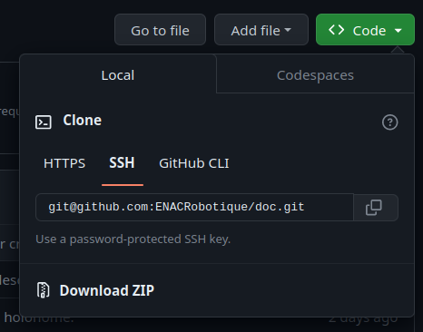

Git
Git est un gestionnaire de version qu'on utilise pour gérer le code. Il permet entre autres de facilement collaborer à plusieurs sur un même code, ou encore de revenir à une version antérieur d'un fichier.
Mise en place
-
se créer un compte sur Github
-
donner son nom d'utilisateur à un responsable du club afin qu'il vous ajoute à l'organisation ENACRobotique
-
installer git :
-
configurer son email et son nom :
git config --global user.name "Michel"git config --global user.email "michel.du@pont.fr"
Afin de faciliter l'utilisation de github, il est conseillé de créer une paire de clés SSH et de d'ajouter la clé publique à votre compte github. Cela permettra de pusher vos modif sans taper votre login/mot de passe à chaque fois :
-
créer un paire de clés :
- ouvrir un terminal et lancer
ssh-keygen - Garder le chemin par défaut
- Ne pas mettre de passphrase pour n'avoir rien à taper lors d'un push (faites "Entrée" plusieur fois sans rien taper).
- Vous pouvez visualiser la clé avec
cat ~/.ssh/id_rsa.pubcertain pourront avoir un autre nom de fichier terminant par .pub
- ouvrir un terminal et lancer
-
Ajouter la clé à votre compte github :
- connectez vous à Github, et allez dans vos Settings à l'onglet SSH and GPG keys
- Cliquez sur New SSH key
- Entrez un titre pour vous rappeler à quel ordinateur cette clé est liée
- copiez collez la totalité de votre clé publique (ce qui sort de
cat ~/.ssh/id_rsa.pub) - Cliquez sur New SSH key
- Confimez votre mot de passe
Vous pourrez maintenant cloner les dépôt github en utilisant SSH plutôt que HTTPS en cliquant sur Use SSH dans la petite fenêtre pour obtenir l'adresse du dépôt. L'adresse du dépôt devrait ressembler à ça : git@github.com:ENACRobotique/doc.git

Utilisation
Vous aurez un cour sur l'utilisation de base de git. Plus que de simple commande il y'a aussi tout un concept a comprendre que vous serez ammené à maitriser avec l'usage. Vous pouvez retrouver un récap des commandes de bases ici : Git cheat sheet